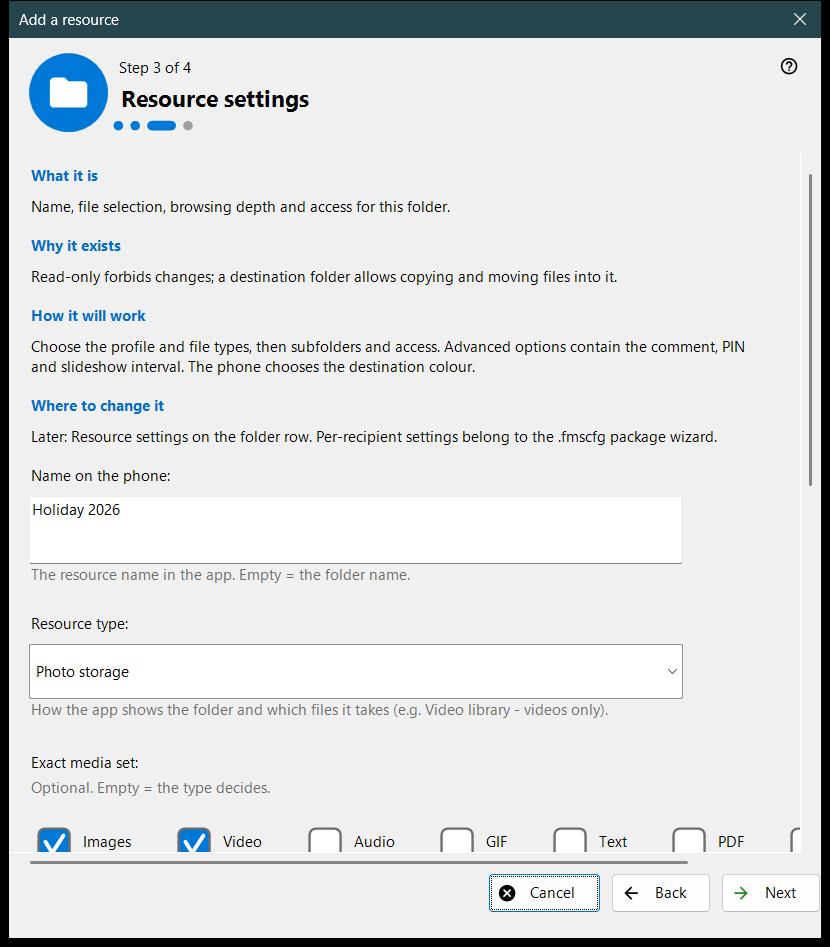
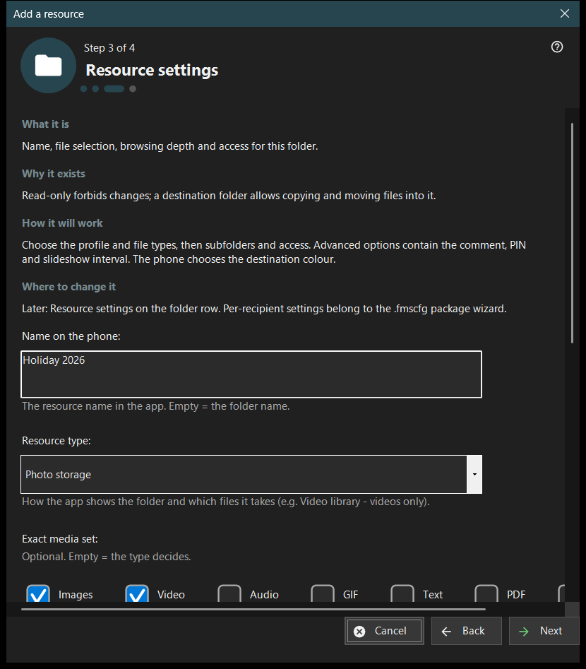

Add a resource
What this is for
A short wizard that adds one shared resource: a folder or an already open FileDO disk. It opens from the 'Resource addition wizard..' item of the Add menu and from the first-run flow, and ends by adding the resource to the share list.


In this order
- Read what a resource is and press 'Next'.
- Press 'Choose a folder..' and pick the folder.
- Set the name, type and access on the 'Resource settings' page.
- Review the summary and press 'Finish'.
- Use the buttons of the last page to show the QR code or open the settings.
The elements
What a resource is
A resource is a folder or an open FileDO virtual disk that the viewer reaches through this PC. Files stay on the computer; the phone browses and copies them over the connection, and a ticked folder in the list is the one that is served.
Choose a folder
'Choose a folder..' opens the usual folder picker and 'FileDO disks..' lists open disks. A folder that is already in the list is refused with 'That folder is already in the list.'. Pick FileDO disks that are already open; the wizard does not create or mount them.
Resource settings
The name on the phone, the type, the exact media set, the scan conditions and the access. Read-only forbids changes; a destination folder allows copying and moving files into it. 'Advanced options' hold the comment, the PIN and the slideshow interval. The destination colour is chosen by the phone.
Resource and next actions
'Finish' saves the settings and adds the resource; until then cancelling changes nothing. The last page tells whether the resource is served. If the server is off the phone cannot see it yet; if serving is not confirmed, check the settings. 'Show the QR code' opens the access code, 'Settings..' the manager settings, 'Close' leaves the wizard.
Manager settings · SFTP sharing settings · Exchange server settings